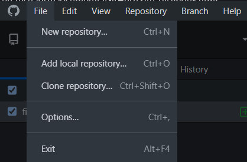

Software de versionamento
O software de versionamento, também conhecido como sistema de controle de versão, é um tipo de software que permite o gerenciamento de mudanças em arquivos de código-fonte e outros tipos de arquivos. O software de versionamento permite que os desenvolvedores trabalhem em diferentes versões do mesmo arquivo simultaneamente, sem sobrescrever o trabalho de outras pessoas. Ele também mantém um registro das alterações feitas em cada arquivo ao longo do tempo, permitindo que os desenvolvedores revertam para versões anteriores se necessário.
Fazendo assim o programador ter total noção do que foi mudado e quando foi mudado, podendo também fazer alterações sem mexer no codigo base do projeto e caso aconteça algum problema no meio do caminho é possivel voltar na versão anterior salva.
Git
Um dos mais populares software de versionamento é o GIT e é esse programa que iremos apresentar aqui.

Para baixar o Git é recomendado que seja direto do site oficial
Site do GitApós a instalação é recomendado que reinicie o computador(não é obrigatorio)
GitHub
Se você pensou que é a mesma coisa está errado, GitHub é como se fosse uma rede sociais dos desenvolvedores aonde você deixa seus projetos na nuvem, tornando-os assim intocaveis.

Você irá precisar criar uma conta no site para conseguir ultiliza-lo de maneira correta
GitHub Desktop
Para ultilizar o Git normalmente é usado o terminal para digitar os comandos, mas inicialmente o GitHub Desktop é uma otima opção porque tem as mesmas funcionalidades e é muito intuitivo.
Sua instalação é muito simples.
Site do GitHub DesktopApós baixar é só logar com sua conta do GitHub
Funcionalidades do GitHub Desktop
Criando um novo repositorio local
Para criar um repositorio pelo desktop,é apenas ir em 'File' e depois 'New Repository'

Na tela posterior, você preencherá o nome do projeto, a descrisão, o local que o arquivo irá ser salvo, se ele irá ser iniciado por um 'README'(Essa opção é recomendada ser marcado, pois no GitHub ela será a descrisão do projeto), o git ignore é para especificar algum arquivo para o git ignorar e a license é a licensa de uso(Recomendavel ultilizar a MIT license, mas você pode ler os termo para decidir qual você irá ultilizar)
Confirmando o processo o repositorio foi criado